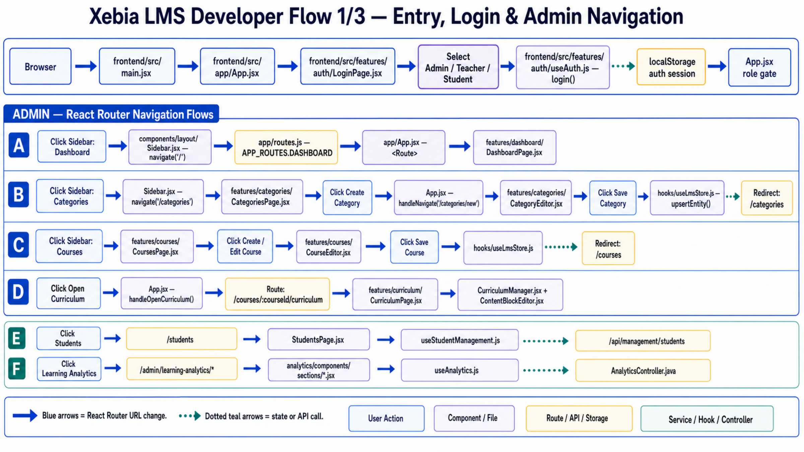
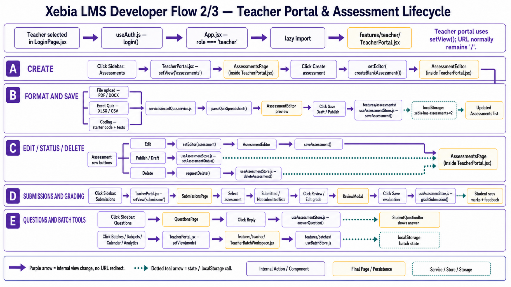
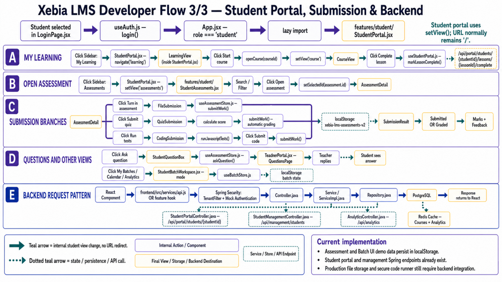
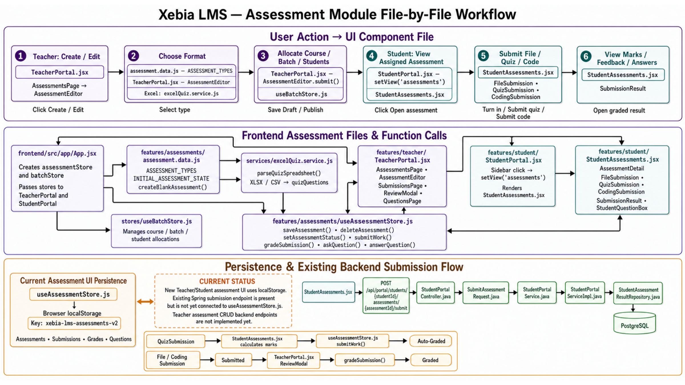

Documentation sections
Layers, role navigation, data ownership, security, and integration boundaries.
2. BackendSpring packages, controller-service-repository flow, Redis, and extension rules.
3. FrontendReact routing, portal views, stores, services, and assessment components.
4. APIsCurrent REST endpoints, headers, status codes, Swagger, and known gaps.
5. FeaturesAdmin, Teacher, and Student capability and persistence matrix.
6. Execution flowsButton click to component, hook, API, repository, and result.
7. DatabaseFlyway history, tables, relationships, indexes, and missing models.
8. ConfigurationEnvironment, startup, build, verification, security, and deployment checklist.
Current architecture
React 18Vite 5Spring Boot 3.2PostgreSQLFlywayRedis
| Area | Entry file | Navigation | Source of truth |
|---|---|---|---|
| Admin | App.jsx | React Router | Optional API + local fallback |
| Teacher | TeacherPortal.jsx | Internal setView | Assessment APIs + local fallback; Batch localStorage |
| Student | StudentPortal.jsx | Internal setView | Mixed backend and local prototype |
| Backend | LmsCourseApplication.java | REST controllers | PostgreSQL + Redis cache |
Developer workflows




Assessment handoff
| Responsibility | File |
|---|---|
| Models and seeded assessment data | frontend/src/features/assessments/assessment.data.js |
| CRUD, API sync, submission, grading, Q&A | frontend/src/features/assessments/useAssessmentStore.js |
| Excel/CSV parsing | frontend/src/services/excelQuiz.service.js |
| Teacher create/review UI | frontend/src/features/teacher/TeacherPortal.jsx |
| Student submission UI | frontend/src/features/student/StudentAssessments.jsx |
| Assessment CRUD and Q&A | backend/.../assessment/AssessmentController.java |
| File upload and student submission | FileController.java + StudentPortalController.java |
Run locally
Frontend: cd frontend, npm install, npm run dev.
Backend: configure PostgreSQL and Redis, then cd backend and mvn spring-boot:run.
Open the original four-page workflow PDF or read the consolidated Markdown guide.